DESIGN PROCESS
HOW THE DESIGN TOOK SHAPE:
“LANDFORM was developed in four phases, each answering a question about the park: what the building needs to hold, where it should sit, how it should relate to the ground, and how it comes together as a whole.”
PHASE 1
EXPLORING FORM + FLOW
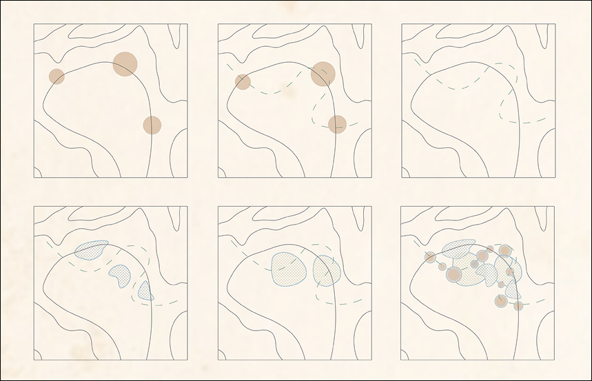
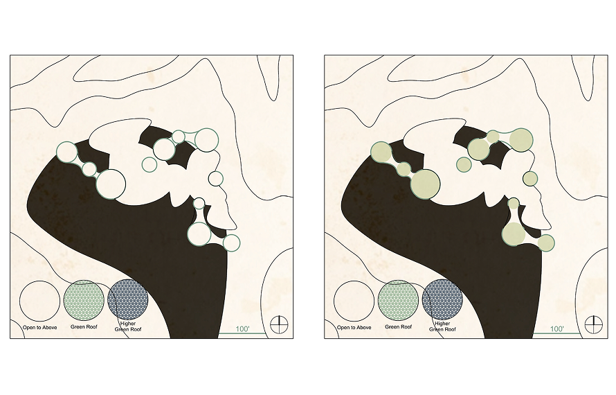
We began by exploring many iterations of connected, blob-like shapes, testing how each would handle circulation, flow and the points where people enter and exit. In parallel, we started mapping the program, with a simple logic: spaces with similar uses sit close together. These studies set up a building organized by how people move through it.
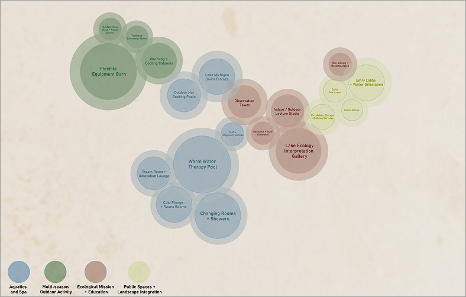
PHASE 2
LOCKING THE CONCEPT + FORM
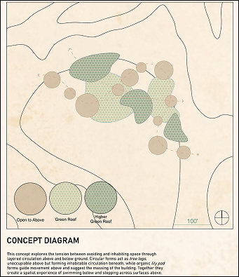
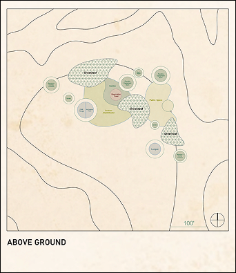
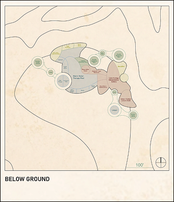
Phase 2 is where the concept and the form came together. The lily pad and tree idea gave the shapes their reasoning, the layout and orientation on the site were settled, and the form was largely locked in. From here, the work shifted from exploring possibilities to developing one clear design.
PHASE 3
DEVELOPING THE PLANS
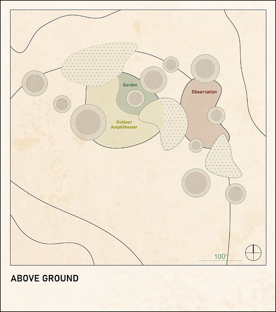
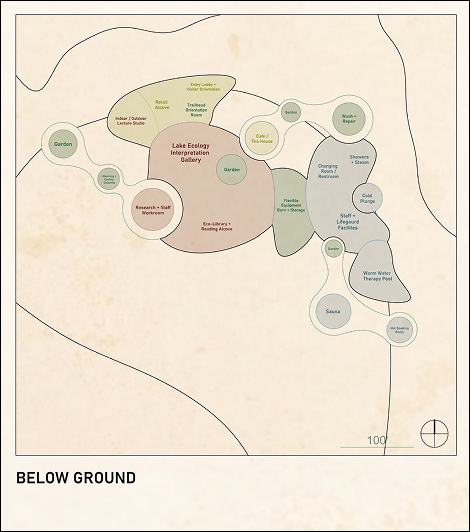
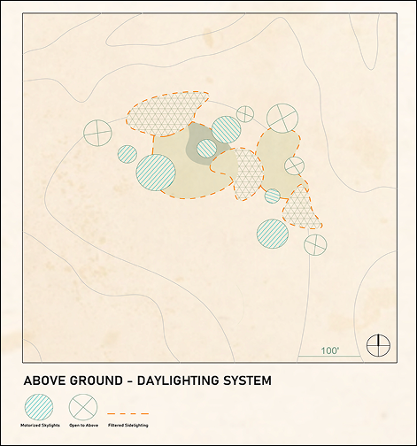
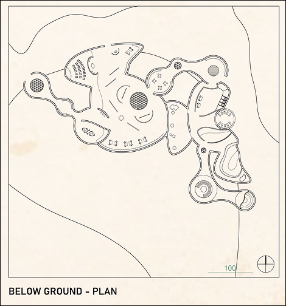
With the form fixed, we split the plans at two levels: a green roof landscape above and the main interior spaces below. The large circular cutouts connect the two, letting light, air and movement pass between inside and outside. In this phase the idea was cleaned up to be more functional to the goal of what the building was supposed to accompolish.
PHASE 4
BRINGING IT ALL TOGETHER
The final phase combined everything into a complete design: plans and sections, models, renders and collages, the structure of full logs from the site, and the sunroofs and sliding doors that let spaces open and close with the seasons.
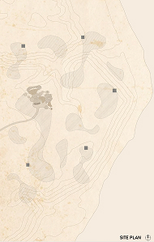
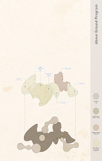
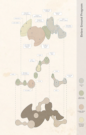
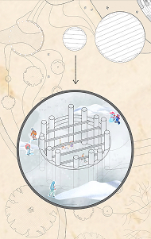
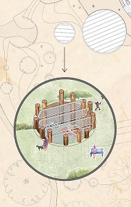
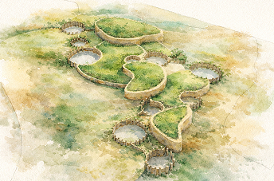
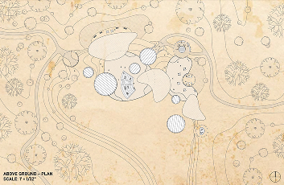
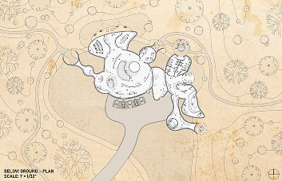
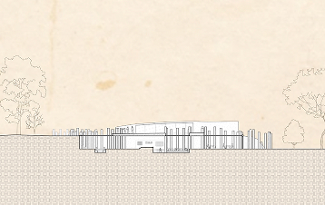
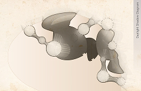
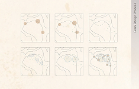
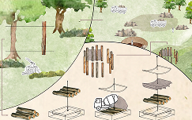
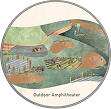
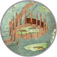
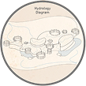
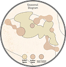
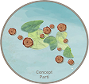
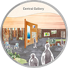